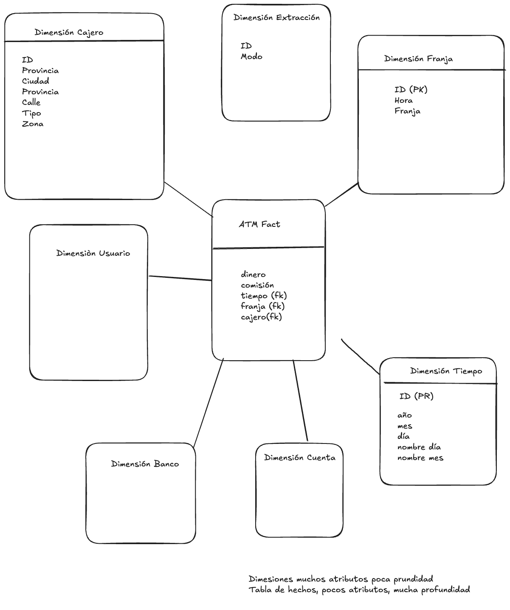
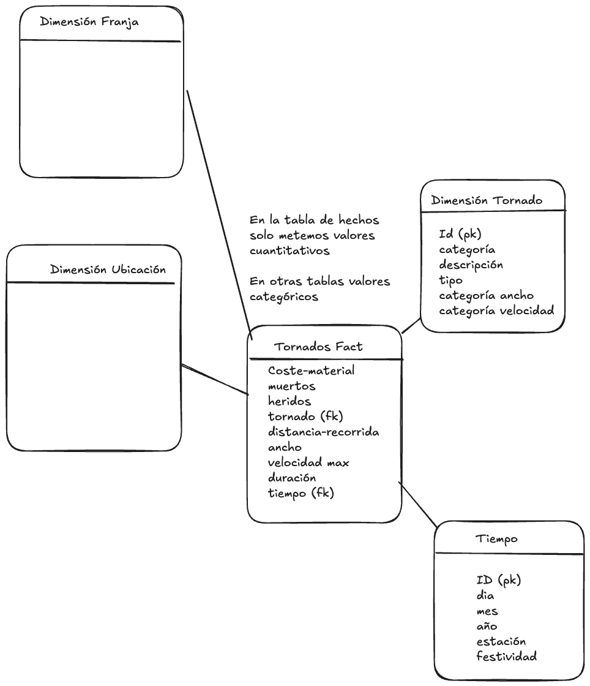

Práctica 1
Temas de MYAD · 2/2
- 1. Almacenes de Datos
- Práctica 1
Caso de uso 1
Una entidad financiera gestiona una red de cajeros automáticos propios (ATM). Estos terminales están distribuidos en sus sucursales y en ubicaciones de terceros, como centros comerciales o aeropuertos. A la entidad le interesa analizar el uso de dichos cajeros por parte de los usuarios y responder a cuestiones analíticas como:
- ¿Cuáles son los días con mayor volumen de retiradas?
- ¿Qué ubicaciones presentan la mayor demanda por parte de los usuarios?
- ¿Que franjas horarias presentan mayor número de operaciones los sábados?
- ¿Cuál es la media de fondos retirados por ubicación?
- ¿Qué ciudades presentan mayor demanda de retiradas?
- Media de retiradas por usuario.
- Evolución mensual de las retiradas de fondos.
Nota: suponemos que los cajeros tienen siempre fondos y que las retiradas siempre finalizan. Solo se permiten retiradas.

Caso de uso 2
Una agencia gubernamental de meteorología en EEUU tiene como función recopilar datos sobre fenómenos meteorológicos extremos para mejorar los sistemas de alerta temprana y evaluar la resiliencia y respuesta de las distintas regiones. En particular está interesada en el registro y evaluación de cada tornado en su territorio y evaluar la capacidad de respuesta de los diferentes estados americanos. Para ello necesita analizar los datos de los que dispone y conseguir respuestas a preguntas como:
- ¿Cuál es la peor época de tornados para cada estado?
- ¿Cuál es la tendencia en el número de tornados a lo largo de los últimos años?
- ¿Cuál es el estado menos preparado para estas situaciones?
- ¿Cuál es la cantidad de tornados por año y estado?
- ¿Qué estados tienen mayor número de tornados de máxima categoría?
- ¿Cuál es el coste de los tornados para cada estado?¿y para el país?
Ejemplo de fuente de datos: https://www.kaggle.com/datasets/danbraswell/us-tornado-dataset-1950-2021
